Для кого
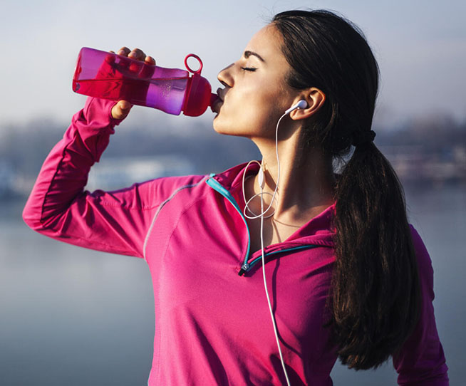
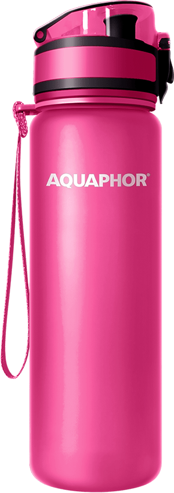
Молодость и красота
Для тех, кто ведёт активный образ жизни, имеет большой круг общения, заботится о своей внешности и красоте.
Для кого
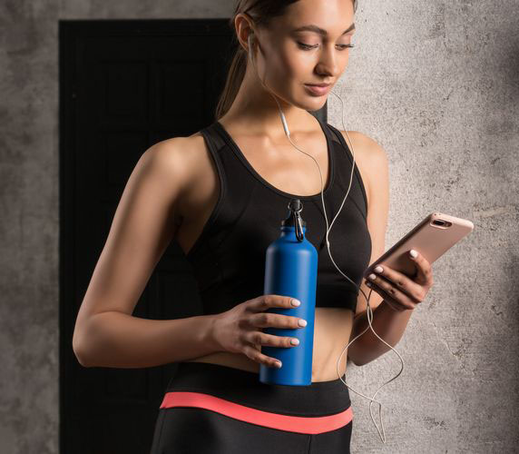
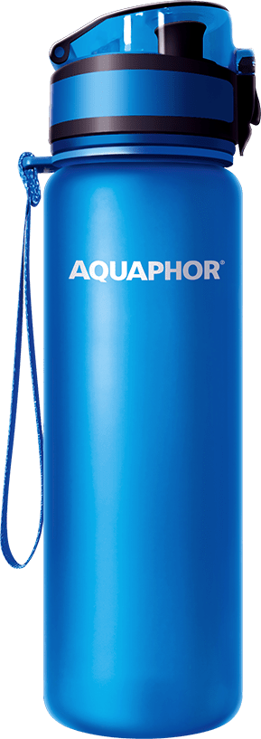
Дoстигать целей
Для тех, кто следует современным тенденциям, энергичен и мобилен, живет в плотном графике событий, достигает своих целей.
Для кого
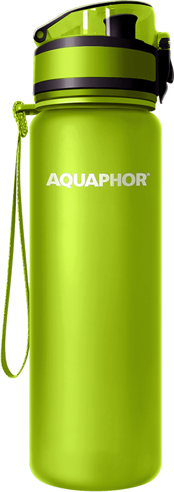
Здоровая семья
Для тех, кто заботится о себе и своих близких, поддерживает иммунитет, принимает витамины, выбирает натуральные и качественные продукты.
Для кого
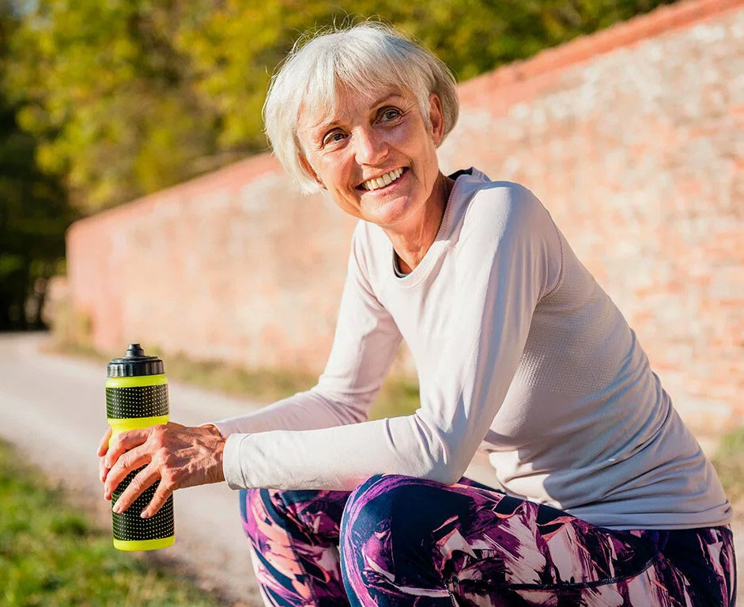
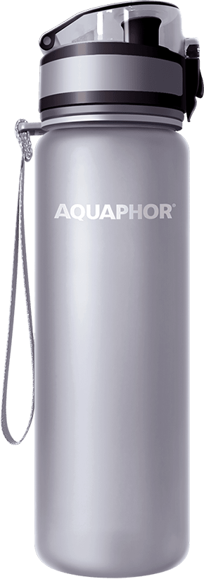
Счастливое долголетие
Для тех, кто ценит своё здоровье, предпочитает полезные продукты и соблюдает режим дня.
Слоган
Твоя вода. Твоя жизнь.
Твоя осознанность.
Твоя осознанность.
О пользе продукта
Для чего?
Узнайте про водородный показатель и окислительно- восстановительный потенциал и их влияние на организм.
Какие бывают камни
Природные свойства
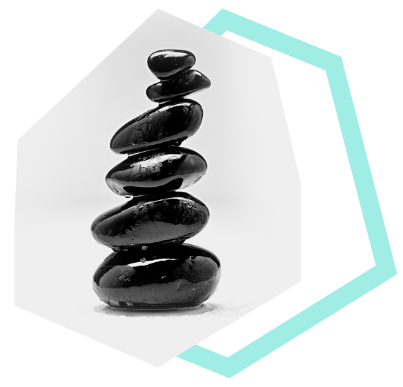
Насыщено Природой
Природа уникальна – она создала естественный механизм обогащения воды: горная вода движется с вершин и на своем пути взаимодействует с различными минералами.
Именно такая вода легко усваивается организмом человека и поддерживает его кислотно-щелочной баланс.
Преимущества создания
Нам удалось воссоздать этот механизм и использовать его при создании PH Balance Stones.
О пользе каждого минерала
Преимущества создания
Благодаря взаимно дополняющим свойствам минералы обеспечивают изменение качества и структуры воды.
Преимущества используемых материалов
В составе корпуса устройства используется материал
Eastman Tritan™
Комплект для регуляции pН воды 100% naturalБезопасен, не токсичен и обладает свойствами BPA free (не содержит бисфенол-А).
Информация о сертификации
Продукция сертифицирована
Подтверждено ассоциацией экспертов «Сибирский федеральный центр оздоровительного питания»
В составе корпуса устройства используется материалВидеоинструкция
механизм Использования
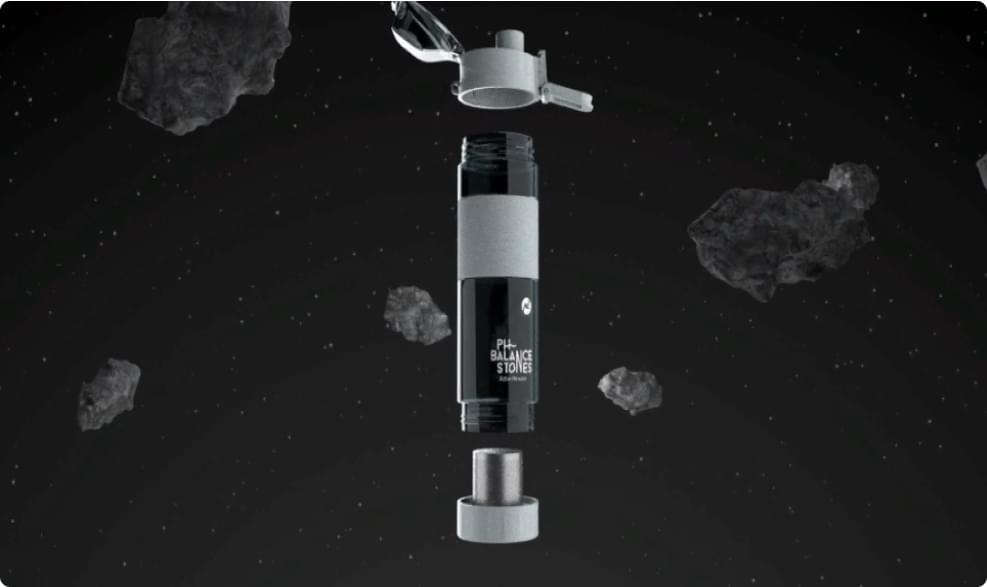
Инструкция по применению
- Тщательно промыть картридж с камнями под проточной водой.
- Поместить содержимое картриджа в контейнер устройства.
- Налить в устройство питьевую воду.
- При первом использовании наполнить бутылку водой и оставить на ночь.
Вода становится «живой» – чистой, слабощелочной, структурированной.
Видеоинструкции 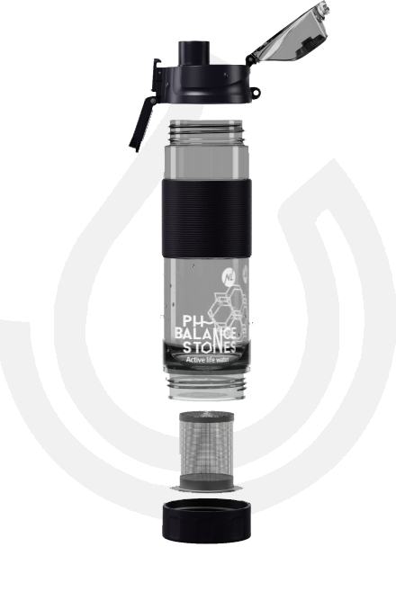
40 минут
Уровень pH воды приходит в норму.
О свойствах воды
Находящиеся в контейнере природные компоненты делают воду —
- Чистой
- Очищают воду от вредных неорганических и органических элементов и примесей.
- Биодоступной
- Структурируют воду – нормализуют структуру, вода легко усваивается и дает энергию.
- Минерализованной
- Насыщают воду необходимыми человеку макро- и микроэлементами.
О применении воды
Свойства и выгоды
- Полезность
- Замедляет процессы старения.
- Восстанавливает защитные функции организма.
- Выводит токсины.
- Способствует быстрому восстановлению сил после нагрузок.
- Источник K, Ca, Mg, Na, Zn.
- Важный компонент правильного питания.
- Экономичность
Сравнение с аналогичным предложением бутилированной воды:
1 бутылка (0,33 мл) стоит ~ 70 руб.Употребление в день – 3–5 бутылок.Стоимость покупки в месяц: 6 300–10 500 руб.
- Длительность использования 1 картриджа составляет полгода.
- Экологичность
- Снижает ущерб от индустрии пластика: 1 бутылка — это 127 кг пластика (3 года).
- Tritan NON TOXIC BPA FREE
- Материал Eastman Tritan™ используется в составе бутылки и обладает свойствами BPA free.
- Эргономичность
- Удобно взять с собой.
- Приятно держать в руке.
- Помещается в спортивной сумке.
- Устанавливается в подстаканник машины или велосипеда.
- Всегда под рукой на офисном столе.
О полезный привычках
Создай свою полезную привычку
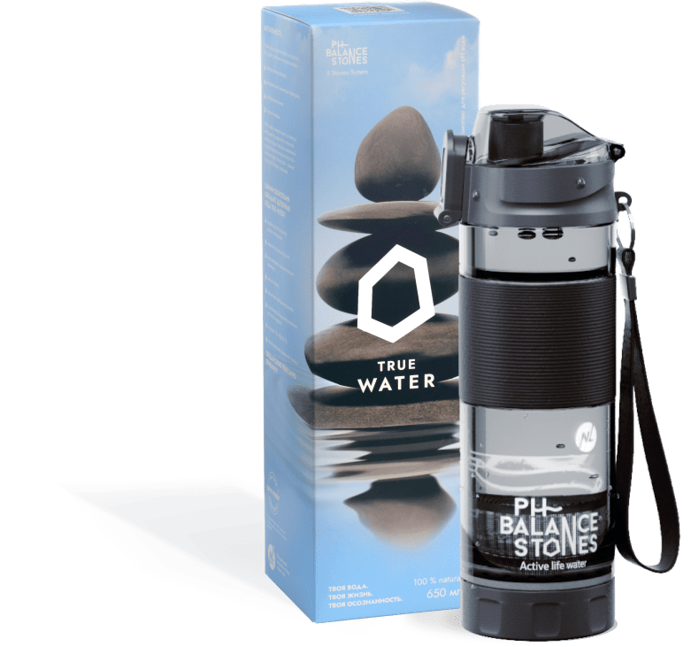
Вы можете заказать Ph Balance Stones только на сайте NL STORE